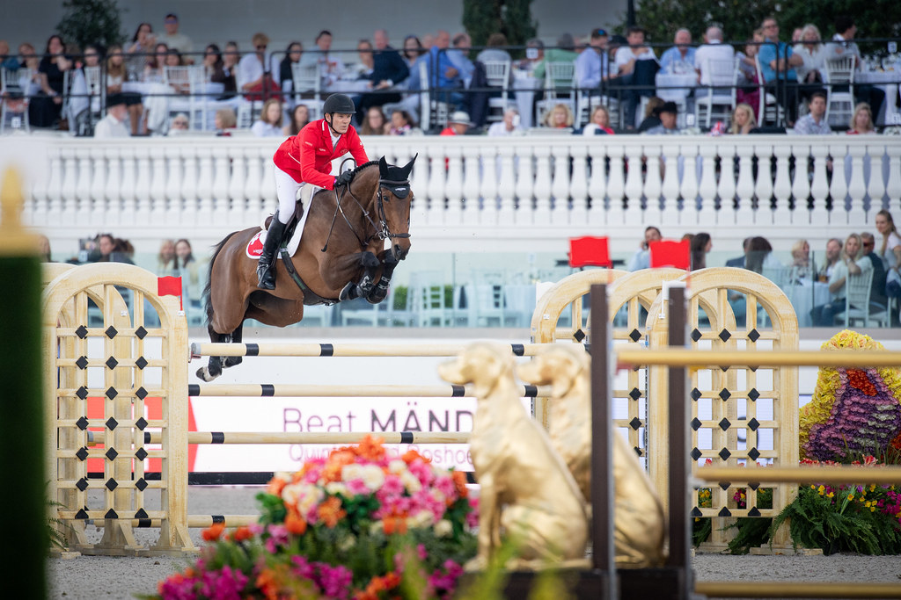

Beat Mändli estrena la Copa del Mundo con el único doble cero en la cita norteamericana
El suizo se impuso en la primera etapa de la Liga América del Norte montando a Qoachella, que debutaba en un Gran Premio del circuito con victoria en la prueba de 1,60 m diseñada por Alan Wade.

Uso editorial autorizado FEI
Beat Mändli firmó el único recorrido sin faltas del Gran Premio que inauguró la temporada 2026/27 de la Liga América del Norte de la Copa del Mundo. El suizo, que saltó el primero en el desempate, paró el cronómetro en 38,03 segundos sobre Qoachella y se llevó una victoria de mérito ante un recorrido reducido diseñado por el irlandés Alan Wade que ningún otro binomio pudo completar limpio.
Shane Sweetnam, con James Kann Cruz, terminó segundo tras derribar el último obstáculo y sumar cuatro puntos en 35,61 segundos. El alemán Christian Kukuk y Akarad Tivolli Z ocuparon la tercera posición, también con cuatro puntos, en 37,68 segundos.
La yegua, hija de Mosito van het Hellehof, debutaba en un Gran Premio de este circuito y mantiene un pleno de dos victorias en sus dos únicas participaciones a 1,60 metros. "Me sorprende cada vez que entra en una categoría más grande. Simplemente lo hace. Es una yegua superinteligente", declaró Mändli, ganador de la Final de la Copa del Mundo de 2007, tras la prueba.
— Redacción de Hípica al Día